sayabot.sayalabs.in
Sign in to Sayabot
Connect your Mac to your room workspace. All agents sync live with your phone.
·
Signed in and synced
Sayabot
user@gmail.com
Host Machine
This computer
Android Companion
Ready for approvals
Local Computer Runner (computerd)
Execute bash and code directly on this computer
Sayabot
Checking version…